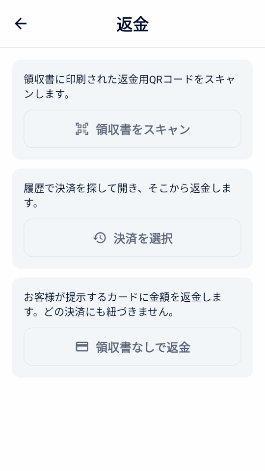
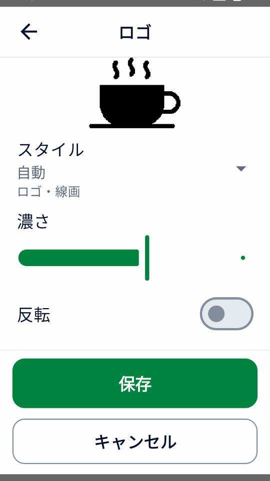
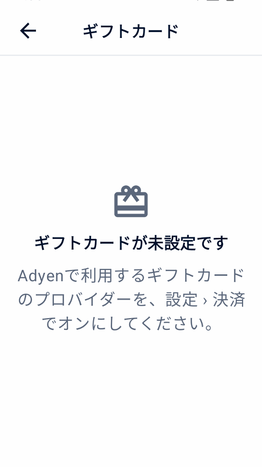

ガイド
Mini mPOS の使い方
日々の業務の手順です。決済、返金、領収書、一日の精算を扱い、任意の業務フローは最後にまとめています。
日常の操作
商品、税、スタッフの権限を準備する
実際の決済を受け付ける前に、Adyen への接続設定を完了してください。決済端末または Adyen Payments アプリが必要です。その後、商品、税、スタッフの権限を一度だけ設定します。
通貨と税を設定する
- 設定 › 決済で、マーチャントアカウントが対面決済で受け付ける通貨を選びます。
- 設定 › 税で、税率、税込価格か会計時に税を加えるか、新商品の初期税率を確認します。
すべての商品に税率があり、非課税の商品には 0% の税率を使います。税を適用をオフにすると税はかかりませんが、税率は保持されます。
重要
通貨を変更しても価格の数値はそのままで、為替レートでは換算されません。変更後に商品価格を確認してください。
商品を追加する
- 設定 › 商品を開き、+ をタップします。
- 名前、価格、税率を入力します。必要ならカテゴリーとバーコード（入力またはスキャン）を追加します。
- 予約金の商品はプリオーソリ商品をオンにし、プリオーソリだけに表示されるようにします。
スタッフ用PINを設定する
設定 › セキュリティでPINを設定をタップすると、管理者PINで設定と商品を保護できます。 再びロックされるまでの時間も選びます。保護された操作にはマネージャーPINを設定をタップします。 管理者PINではこれらの操作を承認できません。あとで変更するには管理者PINを変更または 管理者PINを削除を使います。
マネージャー権限で、マネージャーPINが必要な操作を選びます。似た操作は1つのスイッチを共有し、 参照付き返金、領収書なしの返金、現金返金にはそれぞれ専用のスイッチがあります。このガイドのマネージャー承認は この設定に従います。
管理者PINがない場合、すべての操作を誰でも使えます。管理者PINを設定すると、マネージャーPINを設定するまで 保護された操作はブロックされます。管理者PINを削除するとマネージャーPINも削除されますが、権限の選択は 保持されます。PINを何度も間違えると、しばらく入力できなくなります。
カード決済を受け付ける
- ホームで新規販売をタップします。商品をタップするか、バーコードをスキャンをタップするか、任意の商品 を追加します。
- 会計ボタンをタップします。商品、税、合計を確認し、参照IDやメール欄を入力します。
- 決済ボタンをタップします。端末（Tap to Pay では Adyen Payments アプリ）が購入者に支払いを案内します。
- 結果を待ちます。結果が表示されるまで次の決済を始めないでください。
- 自動で届けていない場合は、領収書を印刷、領収書をメール送信、領収書を共有で領収書を渡します。
注記
端末と加盟店アカウントに応じて、お客様はカードを挿入またはタッチするか、スマートフォンや スマートウォッチをタッチします。Tap to PayではAdyen Paymentsアプリが案内します。
警告
結果不明は失敗を意味しません。再請求する前に元の決済を確認してください。
顧客参照IDとカードの保存は任意です。参照IDと保存カードを参照してください。 会計の分割や、現金・ギフトカード・食事券での支払いはオプションの決済操作を 参照してください。お客様自身のスマートフォンで支払ってもらうには決済リンクを 使います。決済が拒否された場合は拒否された決済を参照してください。
決済を返金・取消する
- 返金
- 請求済みの決済が対象です。全額または一部を返します。
- 取消
- キャプチャ前の確保中の決済が対象です。予約金はプリオーソリをキャンセル、チップ入力待ち の販売は決済をキャンセルをタップします。確保が解除されます。
返金の手順：
- ホームで返金をタップし、領収書をスキャンで領収書の返金用 QR コードをスキャンするか、決済を選択で取引履歴から元の販売を開きます。
- 全額、指定金額、商品単位のいずれかを選びます。商品単位の返金には、このデバイスに元の販売が必要です。
- 返金を確定し、求められたらマネージャーPINを入力します。


これらの返金は元の決済に紐づきます。支払済みの決済リンクは Customer Area で返金します。
分割した販売は元の各支払いに返金されます。Mini mPOSが各カードへの返金額と現金での返金額を 提案します。支払いをタップすると調整できます。カードを1枚ずつ先に返金し、最後に現金を返金します。現金の返金には マネージャーPINが必要です。カードの返金が受け付けられない場合、それ以降は返金されません。販売を開いて残りを 確認してください。
サーチャージが報告された販売では、購入額、チップ、サーチャージの順に 返金されます。全額返金には残りのサーチャージも含まれます。
領収書なしの返金
領収書なしで返金は、領収書のない返品など、返金する決済がない場合にのみ使います。購入者が 提示したカードに金額を返金し、どの決済にも紐付かないため、Mini mPOSは支払われた内容を確認できません。 誤った返金や重複した返金の責任は加盟店にあります。
Adyenにストアの非参照返金を有効にしてもらい、Customer AreaでAdyenの返金上限を設定します。次に「設定」›「決済」で 領収書なしの返金を許可をオンにし、独自の返金上限とマネージャーPINを設定します。 一部の国やQRコード型ウォレットではAdyenがこの返金を認めていません。Mini mPOSはAdyenが端末に対して確認した ストアをチェックします。
領収書なしで返金をタップし、金額を入力して理由を選び、確定してマネージャーPINで承認します。 その後、購入者がカードを提示します。返金承認済みはアクワイアラーが即時に承認したことを、 返金要求済みはAdyenがリクエストを受け付けたことを示します。取引履歴、領収書、日次レポートでは これらの返金を別に表示します。手作業で照合してください。
Adyenサポートが返金の保留期間を設定した場合は、返金保留期間を設定済みをオンにします。保留期間中に 返金を開いて返金を取り消すをタップし、停止されたかどうかをCustomer Areaで確認してください。
Adyen: Unreferenced refunds · Adyen: Cancel an unreferenced refund
重要
返金要求済みは Adyen がリクエストを受け取ったという意味で、購入者への入金完了ではありません。最終結果は Customer Area で確認してください。返金の結果が不明な場合は、再試行の前に確認してください。
領収書を印刷、メール送信、共有する
決済結果や取引履歴の項目で領収書を印刷または領収書をメール送信をタップします。タブレットやスマートフォンでは領収書を共有 で、Android の共有メニューから画像を送れます。印刷にはプリンター付きの端末が必要です。
領収書をカスタマイズしてテストする
- 設定 › 領収書で店舗情報、ヘッダー、フッターを入力します。またはAdyenから店舗情報をインポートし、Adyen の情報を確認します。 不足している情報を補完で既存の文言を保持するか、既存の情報を置換 で取得した店舗名・住所・電話番号を使います。取得した項目が空欄の場合は元の値を保持し、登録番号・タイトル・フッターは変更しません。
- 自動で印刷、加盟店控えを印刷する条件、返金用QRコードを表示するかを選びます。
- テスト領収書を印刷をタップして印字を確認します。画面のプレビューはプリンターの正確なレイアウトを示しません。
そのほかの設定：
- 税額を表示
- 合計に含まれる税額、または加算する税額を表示します。課税額は変わりません。
- 税率別の内訳を表示
- 税率ごとの税額を表示します。税込価格で含まれる税額を表示するには必要です。
- 税率別の対象金額を表示
- 0% を含め、税率ごとに商品の合計を表示します。
- 参照IDを表示
- 初期設定でオンです。加盟店参照IDと入力済みの購入者参照IDを印刷し、領収書を決済と照合できるようにします。
- 印を付ける税率（%）
- その税率の商品に商品の印と説明を付けます。空欄なら印を付けません。
- 1行の文字幅
- 細い領収書ロール向けに初期値は 32 です。テスト印刷でプリンターに合う幅を選んでください。
設定 › 領収書 › ロゴでPNG、JPEG、WebPの画像を選びます。端末にファイル選択機能がない場合は、 セットアップヘルパーからロゴだけ、またはほかの設定と一緒に送れます。白黒プレビューを確認し、 スタイルで自動・ロゴ・写真を選び、濃さ、反転、余白の削除で調整します。サイズで 大または小を選んで保存します。ロゴに店舗名が含まれている場合は店舗名を印刷をオフにします。
ロゴは印刷、メール送信、共有される領収書に表示され、再印刷にも使われます。調整するには元の画像を選び直します。 消去するには「ロゴを削除」を使います。


言語を設定する
アプリは英語、簡体字中国語、繁体字中国語、日本語、ブラジルポルトガル語、スペイン語、フランス語に対応しています。 設定 › 言語を変更すると、この端末のアプリの文言と領収書のラベルがすぐに切り替わります。 保存済みの店舗の文言や商品名は変わりません。デバイスに従うではAndroidのアプリ言語を使います。 Adyenのカード情報の行は端末の領収書言語に従います。
領収書のメール送信を設定する
- 設定 › 領収書のメール送信を開きます。プロバイダーを選ぶか、SMTP サーバー、ポート、差出人、ログイン情報を入力します。STARTTLS または SSL/TLS を使います。
- テストメールを送ります。
- 同じ画面で、購入者のメールを尋ねるタイミングと自動送信の有無を選びます。
SMTP の許可と正しいパスワードについては各社の説明に従ってください。
領収書を印刷・送信できない場合はプリンターとメールの問題を参照してください。
決済を探し、一日の精算をする
取引履歴は決済と返金を日別に表示し、日計も表示します。
1ページに7日分、最大100件を表示します。前へと次へでページを移動します。 検索は保持されているすべての取引が対象です。
- 販売、チップ入力待ち、プリオーソリ、返金、要確認で絞り込み、カードブランドやウォレットは決済方法 で選びます。
- 参照ID、承認コード、購入者参照IDやメール、カード下4桁、ブランド、ウォレット、正確な金額で検索できます。すべての語が一致する必要があり、
visa 34は 34 の Visa 決済を探します。
画面の合計は検索とフィルターに従います。予約金や領収書のチップなど確保中の決済は、キャプチャが受理された日に売上として計上されます。
一日の精算をする
- 取引履歴を開いて要確認で絞り込み、各項目を解決します。結果が不明な場合 を参照してください。
- チップ入力待ちとプリオーソリのフィルターを確認します。チップを入力し、確保の期限前に予約金をキャプチャまたはキャンセルします。
- 日付の横の印刷アイコンをタップし、ローカル日次集計を印刷します。
- Customer Area の Adyen レポートと照合します。 Adyen の精算照合ガイドを参照してください。
集計はフィルターを無視して一日全体を対象にし、売上、含まれるチップ、受理済みの返金、差引額、新規確保額、未解決の操作を通貨別に示します。TEST とシミュレーターの活動は明記されます。支払済みの決済リンクと日付のわからないキャプチャは、日付不明の活動として別に表示されます。
重要
ローカル日次集計の対象は、このデバイスに保持された決済だけです。Adyen の最終的な精算（キャプチャ）ではなく、他のデバイスも含みません。Customer Area の情報が正となります。
警告
LIVE、TEST、シミュレーターを切り替えると、このデバイスのすべての決済履歴とレポートデータが完全に削除されます。未完了の決済がある場合は、もう一度警告が表示されます。Adyen 側では何も取り消されませんが、ローカルの復旧と安全な再試行データは失われます。商品と設定は残ります。
端末の合計と照合し、期間を締める
- ホームで照合をタップし、端末の合計を確認をタップします。Mini mPOSは処理中や結果不明の端末決済を先に確認し、Mini mPOSと端末の売上と返金を並べて表示します。
- 合計が一致しません と表示された場合は、取引履歴で確認が必要な決済を解決してから再度確認します。端末の集計期間は暦日とは限りません。同じ端末を別のデバイスから使った場合やローカル履歴が不足する場合は差異が生じます。決済リンク、トークン請求、サンプル履歴は端末決済ではありません。
- 営業終了時に端末の集計期間を締めるをタップして確認し、必要ならマネージャーの承認を行います。端末は現在の期間を終了し、新しい期間を開始します。元に戻すことはできません。
- 必要に応じて本日のレポートを印刷でローカル日次集計を印刷します。
Tap to Payでは利用できません。合計が一致しても、期間を締めても、精算、返金の完了、オフライン取引の アップロードは確認されません。最終的な結果はCustomer Areaで確認してください。

任意の機能
Adyen機能を確認・設定する
決済先に接続したら、設定 › Adyen機能を開きます。各機能が利用可能、要設定、 この決済先では非対応のいずれかで表示されます。これは設定の目安であり、マーチャントアカウント、カード、決済方法で実際に取引できる保証ではありません。決済の設定が完了するまでは、 決済の設定を完了が表示されます。
- 機能を再確認をタップし、選択した端末の設定を読み取ります。実際の端末の確認には、 クイックスタートに記載のManagement APIロールが必要です。
- 対応端末では、決済通貨の端末チップ、DCC、MOTO、オフライン上限を設定し、Adyenに保存を タップします。これによりAdyen上の端末設定が変更されます。
- 必要な決済オプションを設定の決済、チップと寄付、購入者向け端末画面で オンにし、TESTで試します。この画面にはAdyen Giving、一部承認、サーチャージ、ギフトカード、端末の照合、 購入者向け画面も表示されますが、編集はできません。
Tap to Payでは、端末チップ、購入者向け画面、MOTO/MKE、オフライン決済、端末の照合など物理端末の機能は使えません。 アカウントの有効化や支払方法の要件は、Adyenの対面決済 ドキュメントに従ってください。

任意の会計フローを使う
必要な決済オプションだけを設定でオンにしてください。一部承認、分割、サーチャージを除き、これらの操作には Tap to Payではなく対応する物理端末が必要です。まずAdyen機能を確認し、実際の構成で テストしてください。多くのオプションは1回の支払いで併用できません。競合する場合は会計画面が説明し、どれかを オフにするよう求めます。
音声ガイド付きの支払いを受け付ける
まず、Adyenサポートが端末で有効にし、端末が対応ソフトウェアで動作し、端末の言語がエストニア語、ラトビア語、 アイスランド語、リトアニア語以外であることを確認してから、設定 › 決済 › アクセシビリティで音声ガイドを有効にするをオンにします。AMS1、S1F2、S1F2L、S1E2L、 S1U2ではソフトウェア1.117以降、M450、P630、SFO1では1.124以降で利用できます。Adyenの アクセシブルな決済の要件を参照してください。
会計時に、必要なお客様のために音声ガイドをオンにし、チップ、Giving、手入力をオフにします。 署名が不要なカードを使ってください。この支払いでは全額を要求し、購入者向け画面の案内を省略します。
端末が手順を読み上げます。お客様に十分な時間を取ってください。Mini mPOSは結果を最大10分待ちます。応答が 届かない場合は、次の支払いの前に結果不明の取引を確認してください。 この選択は試行のたびにリセットされます。
サーチャージ
サーチャージはAdyenで設定したとおりにAdyenが加算します。Mini mPOSは設定しません。Adyenが報告した場合、 取引履歴、領収書、日次レポートで購入額やチップと分けて表示します。請求額にはすでに含まれています。報告されない サーチャージは不明のままです。一部承認でサーチャージが報告されない場合は、やり直す前にCustomer Areaを確認するか、 元のカードに返金してください。
支払いの前にサーチャージを案内してください。特にTap to Payにはサーチャージの確認画面がありません。サーチャージと DCCは併用しないでください。サーチャージが報告された場合、Mini mPOSは元の与信額を超える調整や売上確定を ブロックします。Adyenのサーチャージ要件と Adyenのサーチャージ設定を 参照してください。
メキシコのカード分割払い
発行会社のプログラムと手数料をAdyenに確認し、「設定」›「決済」で分割払いをオンにして、Adyen機能を更新し メキシコのストアを確認します。会計時にデビット、一括クレジット、3・6・9・12・18か月の分割払いから選び、 対象のカード1枚で販売全体を支払います。決済リンク、トークン、スキャン式ウォレット、ギフトカードでは分割払いは 適用されません。
詳細、取引履歴、領収書には、要求したプランと返されたプランが表示されます。対応していない発行会社は拒否する ことがあります。元の決済を金額指定または全額で返金してください。支払いスケジュールは発行会社が管理します。
一部承認された決済の残額を受け取る
一部承認を許可をオンにすると、要求額より少ないカード承認を受け付けます。結果が一部支払済みの場合は、支払い済み額と残額を確認し、ホーム の横の受け取るボタンをタップします。同じ販売の残額を受け取る方法を選びます。承認済み分は支払い済みなので、全額で新しい販売を始めないでください。
応答がないことは一部承認ではありません。追加で受け取る前に結果不明の取引を 解決してください。

販売を分割する・現金で受け取る
会計でその他の支払い方法をタップします。残額全額を受け取るには現金を選び、金額・均等割り・商品を指定するには 支払いを分割を選んでから支払いまたは現金を選びます。価格と税額は変わらず、端数は最初の支払いに割り当てます。受取現金は支払額から始まり、数字を入力すると置き換わります。 ちょうどの現金で元の額に戻せます。受取額とお釣りを確認し、お釣りを渡してから確定してください。現金はこのデバイスだけに記録されます。
販売は全額を受け取るまで一部支払済みです。結果の受け取る、または取引履歴の残高を回収で、再起動後も 続けられます。均等割りの次の支払い額は自動選択されます。カードの結果が不明な場合は、追加で受け取る前に解決してください。領収書には全支払いが載り、日次レポートでは現金を分けて表示します。端末集計に現金は含 まれません。
ギフトカードを設定している場合は、ギフトカードをタップして選んだ金額をギフトカードで支払います。 残高が足りない場合は一部が承認されます。ギフトカードでの支払いはそのカードに返金されます。ただしローカル ギフトカードはMini mPOSの外で返金します。


分割販売の日本語シミュレーターデモです。
購入時の現金引き出し
Adyenがストアとカードプログラムを確認したら、「設定」›「決済」で購入時の現金引き出しをオンにし、現金の上限と マネージャーPINを設定します。会計時に追加で求められた現金額を入力し、対象のカード1枚で販売全体を支払います。 購入は承認されても現金引き出しが拒否されることがあります。承認された現金だけを渡してください。
現金引き出し
ホームの現金引き出しは、購入なしで現金を要求します。Adyenがストアでオーストラリアのeftpos現金引き出しを 確認したら、別途オンにします。
承認後、承認された現金とカードへの請求額を確認します。承認された現金だけを渡し、現金の引き渡しを記録を タップしてマネージャーPINで承認します。金額が報告されていない現金は渡さないでください。結果が不明な場合は 現金を再要求せずに確認してください。記録されていない引き渡しは取引履歴に残ります。日次レポートでは承認済みと 引き渡し済みの現金を販売と分けて表示します。返金で渡した現金が戻ることはありません。
食事券を受け付ける
発行会社との契約、店舗登録、Adyenでの有効化が済んでから、「設定」›「決済」で食事券を オンにしてください。対象の食事券は端末の確認済みの店舗の国で決まります。ブラジルのPAT食事券、ベルギー・ フィンランド・ドイツ・ルクセンブルク・スペインのMastercard/Visa食事券、フランスのTitres-restaurantです。 設定後にAdyen機能を更新してください。Monizze、ベルギーのPluxee、Lunch Checkは対象外です。
食事券に対象商品が必要な場合は、「設定」›「商品」で各商品を開き、食事券の対象をオンにします。 任意の商品は対象になりません。会計時にその他の支払い方法 › 支払いを分割、食事券の順に タップします。Mini mPOSは食事券で支払える最大額を提示します。残りはカードまたは現金で受け取ります。 Mastercard/Visa食事券は一部承認されることがあります。Titres-restaurantは1日あたり最大EUR 25までで、日曜日と 祝日は使えず、返金もできないため、ストアクレジットで対応してください。残高が足りないブラジルの食事券は拒否 されるので、少ない金額を入力してください。
ブラジルでは、ブラジルの食事券をアプリで選択をオンにすると、Mini mPOSから食事券での支払いを 要求できます。Adyenサポートが端末独自のクレジット・デビット・食事券の選択画面を有効にしている場合はオフのまま にし、カードで会計してお客様に端末で選んでもらいます。食事券の返品は元の食事券に戻り、現金では返しません。
Adyen：ブラジルの食事券 · Adyen：ヨーロッパの食事券
購入者向け端末画面を使う
別のネットワーク端末またはクラウド端末を使う場合、設定 › 購入者向け端末画面を開きます。決済前の明細表示、注文確認、会計のメール欄が空の場合のメール入力を選べます。メール入力には 領収書のメール送信の設定が必要です。領収書を自動でメール送信 がオンなら、領収書は自動で送信されます。承認後にQRコードを表示したり、0–10の評価を求めたりすることもできます。返された評価は取引詳細に表示されます。
これらの案内はアプリの言語で表示されます。Mini mPOSが決済端末自体で動作している場合は使えません。 QRコードには領収書ではなく加盟店参照IDが含まれます。領収書も必ずお渡しください。
チャリティ寄付を案内する
AdyenとAdyen Givingの利用を手配したら、設定 › チップと寄付でチャリティ寄付（Adyen Giving） を有効にします。販売の会計で選択すると、決済後に端末で寄付を案内します。プリオーソリや領収書のチップ用の確保には使えません。
購入と寄付は別の取引です。報告された寄付額は取引詳細に表示されます。購入が承認されただけでは、寄付の完了は確認できません。
MOTOまたはカード番号手入力で決済する
- 必要な入力方法を端末とアカウントで利用できるかAdyenに確認します。必要ならAdyen機能でMOTOを設定し、 スタッフのPINを設定します。
- 設定 › 決済でMOTOまたはカード番号手入力を有効にします。会計で、遠隔注文には郵送・電話注文（MOTO） 、ICチップや非接触の読み取りに失敗した場合には手入力決済（MKE）を選びます。同時には選べません。
- 支払うをタップし、不正利用とチャージバックの責任に関する警告を確認して、求められたら マネージャー承認を行います。
手入力の取引では、不正利用とチャージバックに対する加盟店の責任が大きくなります。
オフライン決済と未確認バッチを確認する
オフラインEMVとストア・アンド・フォワード（Store-and-Forward）は、ローカル接続の対応端末で使います。Mini mPOSをその端末で動かすか、同じネットワーク上の端末に接続します。クラウド経由やTap to Payでは使えません。Adyenとオフライン処理を手配し、リスクを確認してから Adyen機能で上限を設定してください。Mini mPOS自体は決済をキューに保存せず、ローカルネットワーク障害時に端末への接続を復旧するものでもありません。
取引履歴では、端末が報告したオフライン販売に印が付きます。販売を開くと、オフライン処理の方式（オフラインEMVまたはストア・アンド・フォワード）と、端末が報告した 未確認のオフラインバッチ数を確認できます。オフライン承認ではPSP参照IDがまだない場合があります。これは結果不明ではありませんが、Adyenが受信・精算したことの確認でもありません。
端末とAdyenの接続を復旧し、Customer Areaでアップロードされた決済と最終結果を確認します。端末集計照合 でもオフラインと未確認バッチの警告を確認してください。合計の一致はオフライン決済の精算完了ではありません。確定的な返答がない場合は、オフライン承認と決めつけたり再請求したりせず、 結果不明の復旧手順に従ってください。

購入者のウォレットコードをスキャンする
販売の会計でウォレットをスキャンを使い、購入者のウォレットアプリの支払いコードを読み取ります。商品バーコードや返金用領収書のスキャンとは別です。物理決済端末が必要で、Tap to Pay では使えません。ウォレット照会には読み取り権限が必要です。
- 合計と会計欄を確認し、ウォレットをスキャン をタップします。領収書でのチップが選択されている場合は、それを使わず支払うことを確認します。ウォレットは合計を直ちに請求し、プリオーソリは行いません。
- 購入者のウォレットを選びます。1 種類だけなら自動選択します。個別に設定されたものだけが表示され、Alipay+ の設定から GCash、DANA、Kakao Pay、TrueMoney の個別開通を推測しません。
- 内蔵スキャナーを確認できた端末では、その端末のスキャンボタンを押します。Mini mPOS のデバイスではなく、ネットワークやクラウドの決済端末の場合もあります。デバイスのカメラを使うには カメラを使用をタップします。
- 購入者の支払い QR コードまたは支払いバーコードをスキャンします。有効な 1 回のスキャンで直ちに決済が始まります。通常の結果を待ち、領収書を渡します。
キャンセルしてもカートは残ります。端末でのスキャンは30秒で終了します。再スキャンまたは カメラを使ってください。ウォレットによってはカードを保存に対応しません。トークンが保存 されなくても、承認された決済は承認済みのままです。ウォレットの問題を解決し、 結果不明の決済を再スキャンで置き換えないでください。
Adyen のウォレットガイド と Adyen の PayPal と Venmo ガイドで開通状況と TEST 動作を確認してください。


ウォレットスキャンの日本語シミュレーターデモです。
参照IDを使い、カードを保存する
- 加盟店参照ID
- 予約番号や注文番号を記録するには、設定 › 決済 › 加盟店参照IDの入力を求めるをオンにします。この番号は Adyen で決済を識別します。空欄なら一意の参照IDを生成します。
- 購入者参照ID
- 設定 › 決済で購入者参照ID を、会計で入力する購入者参照ID（初期設定）、購入者のメール、なしから選びます。すべての決済とともに Adyen に送信します。メールの参照IDは初期設定でハッシュ化されます。すべてのデバイスで同じソルトを使ってください。
- カード保存
- 購入者参照IDを設定したうえでカード保存の選択肢を表示をオンにし、Adyen の設定に合った継続課金モデル を選びます。次回の決済用にカードを保存を選ぶ前に購入者の同意を得てください。後で請求するにはトークンを管理するを参照してください。
トークンを管理する
- ホームでトークンをタップし、求められた場合はマネージャーPINを入力します。
- 購入者参照ID（またはそれに使うメールアドレス）を入力し、トークンを検索をタップします。
- トークンの横の請求をタップし、商品または任意の商品を追加します。このカートは新規販売のカートとは別です。
- 請求内容を確認し、請求をタップします。
お客様はその場にいないため、事前に同意を得てください。別の継続課金モデルで保存された トークンはここでは請求できません。これらの決済は取引履歴から返金します。請求の結果が不明な 場合は、7日以内は取引履歴から、その後はCustomer Areaで確認してください。新規販売の会計では、購入者参照IDに 保存済みトークンがあるとトークンで請求が表示されます。
トークンを削除するには、削除をタップして詳細を確認し、確定してマネージャーPINで承認します。 削除するとAdyen上のトークンが消え、Mini mPOSでもほかの連携でも使えなくなります。元に戻せません。過去の決済と その返金は引き続き利用できます。削除が確認できない場合は、請求や再削除の前に削除を確認を タップしてください。
ギフトカードを販売・管理する
ギフトカードはAdyen端末で利用できます。Tap to Payでは利用できません。設定 › 決済 › ギフトカードで、 Adyenでオンボーディングを完了した各プロバイダーをオンにし、Intersolveまたはローカルギフトカードの場合はAdyenから案内されたカード種別を入力し、 スタッフのカード提示方法（カメラでスキャンして有効期限を入力、または端末でスワイプ・手入力）を選びます。 各プロバイダーについてAdyenが案内している操作だけが表示されます。無効化はGivexのみ、ローカルギフトカードは決済のみです。
- ホームでギフトカードをタップし、プロバイダーとカードの提示方法を選びます。
- 残高照会、有効化、チャージ、 現金払い出し、カードへ返金、 無効化のいずれかを選びます。
- 金額を追加する場合はカード決済、またはアプリ外で受領を選んで受け取ったことを確認します。
- 確認し、マネージャーPINで承認します。


残高照会と金額変更の承認はスタッフ権限に従います。カード決済を先に行い、承認されてから金額を送信します。決済の結果が不明な場合は、先に確認してください。 決済は完了したのに金額が追加されなかった場合は金額未追加と表示されます。 金額を再送信するか、カード決済を返金するか、代金を返したことを記録してください。自動で繰り返されることはありません。
チャージ取消は、24時間以内のカードの最新チャージに表示されます。 現金払い出しは通常、残高全額を払い出してカードを使えなくします。一部のGivexカードのみ一部払い出しが可能です。 承認後に現金を渡し、現金を渡しましたをタップします。確認していない受け渡しは再起動後も要対応に残ります。 ギフトカードの取引は取引履歴と日次レポートに売上とは別に表示され、 売上には含まれません。
リンクで支払ってもらう
前提条件
- LIVE で使う前に、マーチャントアカウントが利用規約を含む Adyen Pay by Link の要件を満たしていること
- 販売の会計で決済リンクを作成をタップします。
- QR コードを見せるか、リンクをメール送信、リンクを印刷、またはタブレットやスマートフォンでリンクを共有 をタップします。
- リンク画面を開いたままにして入金を確認するか、後で取引履歴の項目で支払いを確認をタップします。
- リンクが不要になったらリンクを取り消すをタップします。
リンクが支払われる、期限切れになる、または取り消されるまで、項目には支払い待ちと表示されます。リンクの有効時間は設定 › 決済 › 決済リンク で設定します。リンクは販売専用で、予約金や領収書のチップには使えません。
重要
有効期間中は、実際のリンクを持つ人なら誰でも支払えます。支払済みリンクの返金はCustomer Area › Payments › Payment list で行います。アプリからは返金できません。
リンクが表示されない、更新されない場合は決済リンクの問題を参照してください。
予約金を確保し、回収する
前提条件
- Adyen サポートが決済方法のプリオーソリゼーションを有効化済み。 Adyen のプリオーソリゼーションガイドを参照してください
プリオーソリゼーションはカードに金額を確保し、すぐには請求しません。アカウント全体を手動キャプチャにする必要はなく、Mini mPOS はこの決済だけに手動キャプチャを指定します。
- ホームで新規プリオーソリをタップします。プリオーソリ商品を選ぶか、バーコードをスキャンするか、金額を入力します。1 件につき 1 商品です。
- 会計でプリオーソリのボタンをタップします。領収書に確保額が表示されます。
- 準備ができたら取引履歴で項目を開き、操作を選びます。
- キャプチャ
- 必要な金額を回収します。少ない金額なら残りを解除し、多い金額なら先にカード発行会社に確保額の増額を求めます。キャプチャを要求した後は返金できます。
- 金額を調整
- 請求せずに確保額を変更します。同じ金額を送るとオーソリゼーションを更新します。
- プリオーソリをキャンセル
- 確保を解除します。Customer Area でキャプチャ済みの場合は、Adyen が代わりに全額を返金します。
キャプチャ要求済みは最終確認ではありません。Customer Area で確認してください。金額調整の結果をすぐに受け取るには、 Adyen のオーソリゼーション調整ガイドに従い Return adjust authorisation data を有効にします。
警告
確保には期限があります。プリオーソリのフィルターを毎日確認し、速やかにキャプチャまたはキャンセルしてください。失敗や結果不明の操作は キャプチャの問題を参照してください。
端末でチップを受け取る
- Adyen機能で端末チップを確認します。必要に応じて、決済通貨の定義済みチップと自由入力の選択肢を設定します。
- 設定 › チップと寄付で端末でチップを入力を有効にし、会計での初期状態を選びます。必要なら購入金額に応じたチップ候補 で少額の会計には定額、高額の会計には割合を提示するか、税抜き金額でチップを計算を有効にします。
- 販売の会計で端末でチップを入力を選び、支払う をタップします。購入者はカードへの請求前にチップを選びます。返された合計とチップを確認し、領収書を渡します。
プリンターも後からのチップ入力も不要です。端末チップと領収書のチップは同時に選べません。どちらもプリオーソリ、スキャンするウォレット決済、決済リンクには使えません。Tap to Payでは端末チップを使えません。

領収書に書かれたチップを回収する
前提条件
- プリンター付きの端末
- Adyen サポートがプリオーソリゼーションと overcapture を有効化済み。 Adyen の領収書チップガイドを参照してください
設定 › チップと寄付で有効（初期値オフ）か有効（初期値オン） を選び、会計のスイッチの初期状態を決めます。初期設定の無効ではスイッチを表示しません。一部のデビットカードやウォレットはこのフローに対応していません。
- 販売の会計で領収書にチップを記入をオンにし、決済ボタンをタップします。代金は確保され、請求されません。
- 領収書を印刷します。チップと合計の空欄があり、加盟店控えには署名欄があります。
- 購入者が記入したら、結果画面か取引履歴のチップ入力待ちでチップを入力をタップします。
- チップまたは合計を入力するかチップなしをタップし、確定します。
アプリは代金とチップの合計をキャプチャします。20% を超えるチップでは、先にカード発行会社による確保額の増額が必要です。拒否された場合は、少ないチップかゼロを入力してください。保存したチップは変更できません。チップ入力前は返金ではなく決済をキャンセルし、入力後の返金にはチップが含まれます。
警告
ゼロも含め、チップは速やかに入力し、確保の期限前にキャプチャしてください。キャプチャの失敗や結果不明はキャプチャの問題 を参照してください。
追加のデバイスを設定し、データを管理する
- 設定済みのデバイスで設定 › データと転送 › 別のデバイスに共有を開きます。カタログ、設定、パスワードとキーから選び、QRコードを表示 をタップします。
- 新しいデバイスで別のデバイスから設定を選び、すべてのコードを任意の順で読み取ります。カタログを統合するか置き換えるかを選びます。
- 最初のデバイスに表示された 12 文字の転送コードを入力します。商品や設定だけをコピーする場合も必要です。QR コードとは別に保管してください。インポートをタップします。
- 価格と税を確認し、設定 › 端末で接続をテストして、テスト領収書を印刷します。
新しいデバイスは、自身の決済先、端末、環境、Tap to Pay の登録を保持します。共有キーを別の端末で使えるのは、Adyen がその端末に同じキーを割り当てている場合だけです。
重要
これは一度きりのコピーで、同期や決済履歴のバックアップではありません。各デバイスがそれぞれの決済を保持します。Android でアプリのデータを消去すると、デバイスのすべての商品、設定、履歴が削除されます。
設定 › データと転送で取引の保存期間を設定するか、完了した履歴を消去 をタップします。未解決の決済は常に残ります。
タブレットやスマートフォンでは、起動時に新しいバージョンを確認します。ホームに更新が表示されたら、タップしてブラウザーで APK を開き、ダウンロードしたファイルをインストールします。Adyen 端末はこの通知ではなく Customer Area から更新します。 最新リリースを入手し、 インストール手順に従うこともできます。同じ署名元を使い、既存のアプリに上書きしてください。アンインストールやデータの消去はしないでください。
取り込みの問題は PIN と転送の問題を参照してください。